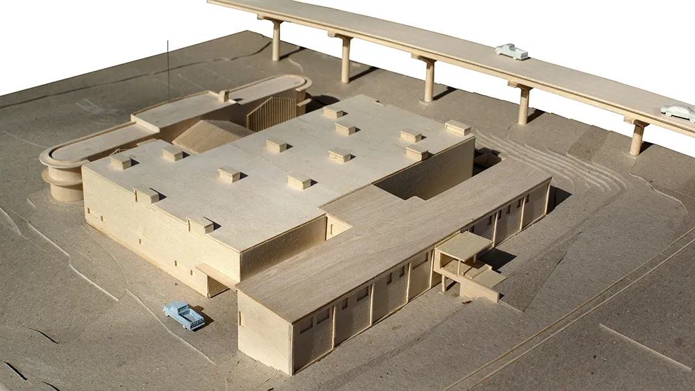
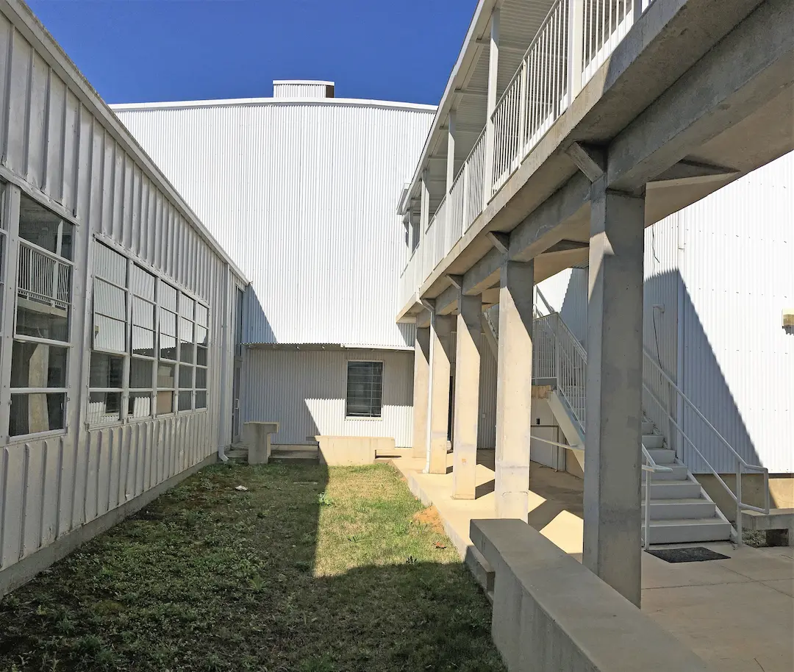
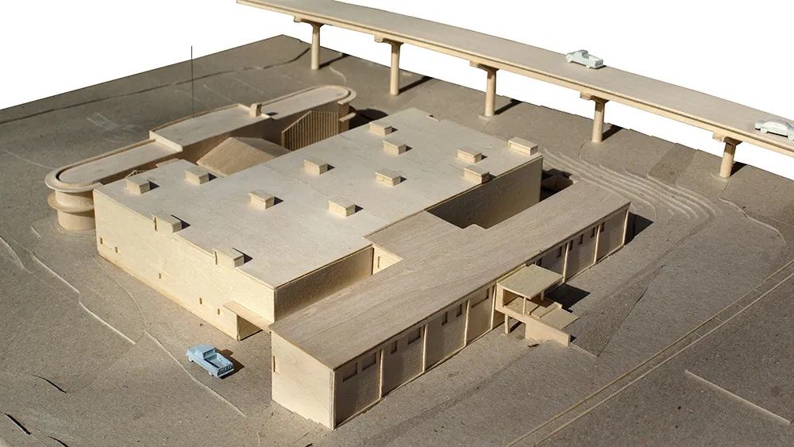
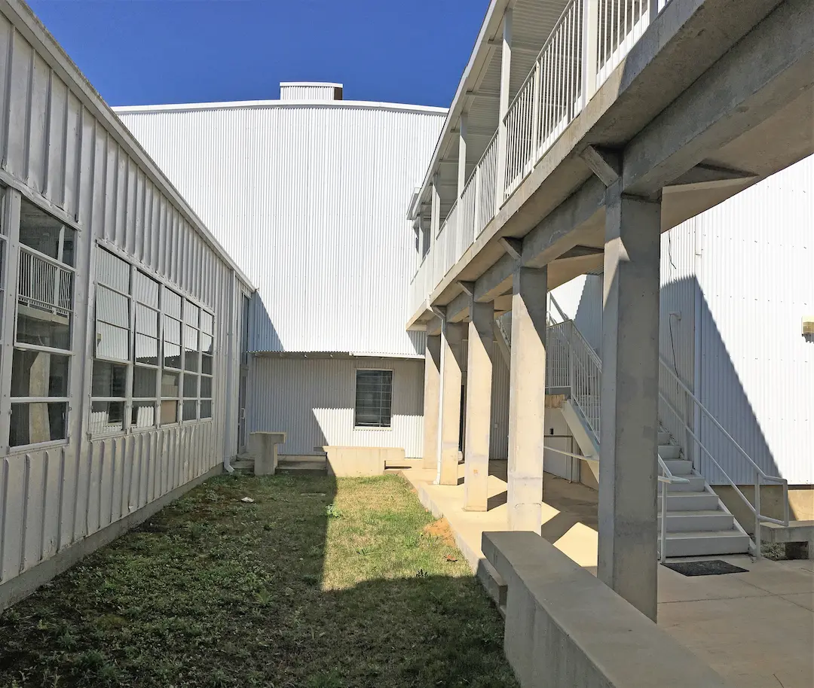

Naval Reserve Center
Restoration and AdditionThe complex scope of this project required that the plywood-skinned 1948 post-war Naval recruiting office be adaptively-reused as the State Record Storage Facility for the Mississippi Department of Archives and History. Located in a prominent downtown location, the main front building, described as marine moderne, was restored and will be used as leasable office space while the World War II-era concrete “barracks” buildings behind will be renovated to be used as State offices in Phase II. The two existing elements were connected with infill construction to accommodate the state’s archival storage needs. This project illustrates large-scale site planning strategy, and a thoughtful mix of restoration, new construction, and adaptive re-use, successfully linking two quite different and remote existing historic structures with new functional, economical storage space.
 


